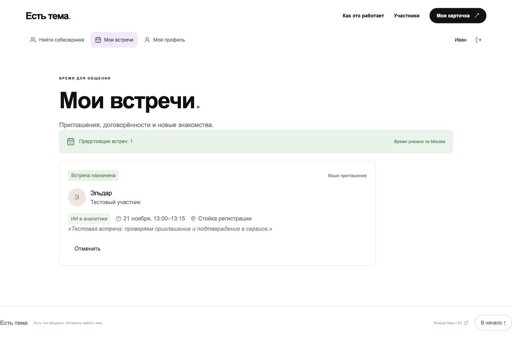

Критерии приёмки и подтверждённый сценарий
Подтверждённый результат 21 ноября
На опубликованном сайте пройдено создание тестовых аккаунтов, вход, публикация карточек, подбор, отправка и принятие приглашения в двух независимых сессиях. Машиночитаемые результаты — production-scenario.json.
Тестовая встреча Иван ↔ Эльдар: 21 ноября 2026, 13:00–13:15 МСК, «Стойка регистрации», «ИИ в аналитике». У обоих status=accepted, invitation id=2, slot_id=2, topic_id=1. У Ивана занятый слот исключён из дальнейшего подбора. Таисия также опубликована с доступностью, но встреча с ней в этом тесте не назначалась.

Скриншоты зафиксированы во время технического теста. Тестовые профили явно помечены описанием, но созданы обычной регистрацией и не исключаются автоматически из агрегатов. Факт офлайн-разговора и полезность не подтверждены.
Как повторить
- Организатор задаёт будущий непересекающийся интервал длительностью 15 минут и точку встречи. Старые интервалы не переиспользовать: тестовый 13:00–13:15 уже прошёл.
- Два участника входят в разных профилях браузера/инкогнито. Новый аккаунт после регистрации скрыт.
- Участники выбирают совместимые темы и общий будущий слот, включают «Участвовать в подборе» и сохраняют.
- Первый получает второго с объяснением совпадения и приглашает, выбрав тему и время.
- Получатель открывает «Мои встречи» и принимает. У обоих появляется «Встреча назначена» с одинаковыми темой, временем и местом.
- Для проверки конфликта отдельным сценарием попытаться занять тот же слот; нельзя получить второй accepted у одного участника. Конкурентность покрыта API-тестом, в этом production-прогоне повторная конфликтная запись не создавалась.
- До начала можно отменить, после окончания accepted доступна оценка; эти действия отдельно покрыты тестами и не являются частью последнего ручного прогона.
Условия и доказательства
| Требование | Ожидаемое поведение | Доказательство |
|---|---|---|
| Регистрация | Ошибки полей, согласие, скрытый профиль и сессия | Живой тест регистрации |
| Права доступа | Чужие приглашения недоступны, принимает получатель | API-тесты; принятие своим получателем на production |
| Подбор | Общая тема и будущее общее свободное время | Иван видит Эльдара и Таисию |
| Согласование | У обеих сторон одна назначенная встреча | API и два снимка выше |
| Конкурентность/идемпотентность | Нет двойной брони и дубля accepted | Конкурентный и повторный API-тесты |
| Прокси | Cookie, тело, статусы, безопасный 502 | 10 тестов прокси |
| Новый интерфейс | Четыре блока, прокрутка, reduced motion, читаемость | Браузерные проверки и снимки лендинга |
| Хранение после пересоздания | Данные сохраняются с постоянным диском | Исторический volume-тест CI; RelaxDev не подтверждён |
Пароли тестовых аккаунтов и организатора не входят в комплект. Для доступа к оставленным тестовым аккаунтам владелец использует свой отдельный локальный файл. Не публиковать его, cookie или базу участников.
Исходный документ: acceptance.md · К составу пакета